(2025) Lecture 5
Presenter: Unknown
Note Taker: Unknown
1 Flavor Multiplets, Kinematics, and Symmetries in Hadron Spectroscopy
1.1 Lecture 5
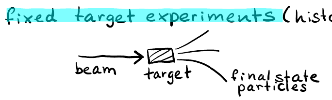
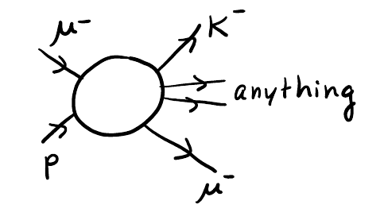
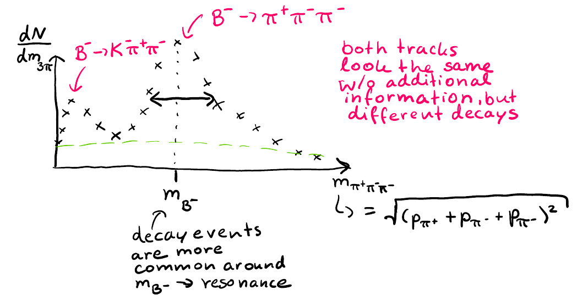
This lecture continues the exploration of production mechanisms in different directions across the world for studying hadron spectroscopy.
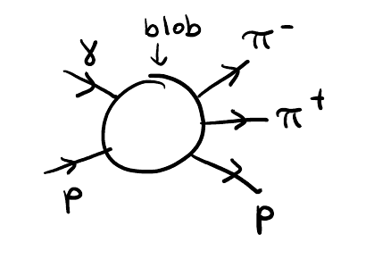
We will go into depth on the kinematics of different reactions, discuss numerical algorithms to produce distributions of particles (particularly decays), and examine one of the most important kinematic setups—frames—along with the kinematic representation of phase space for different reactions.
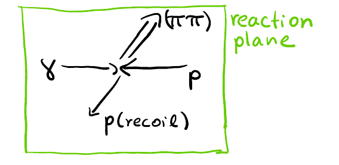
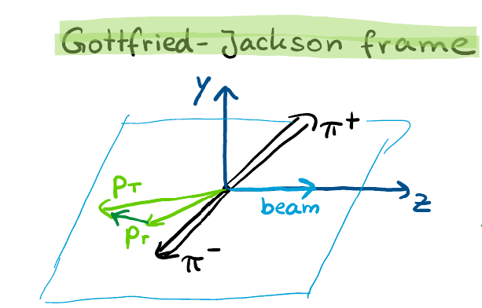
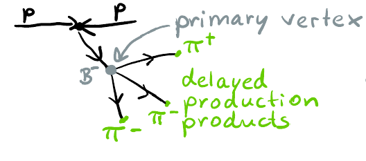
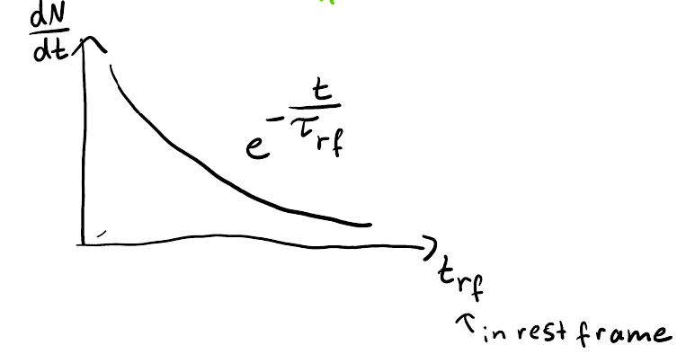
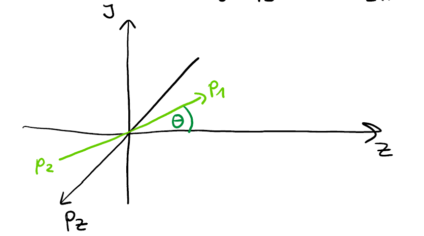
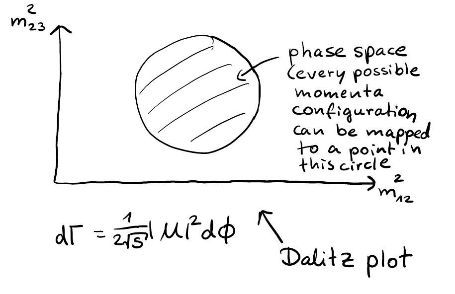
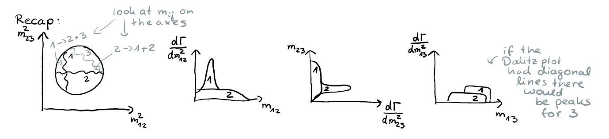
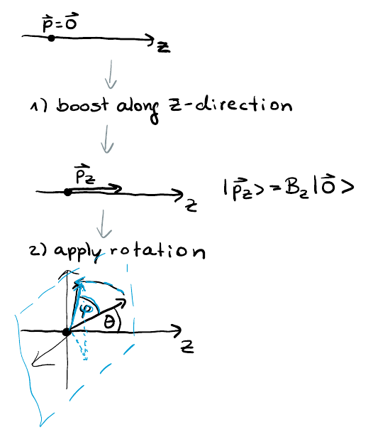
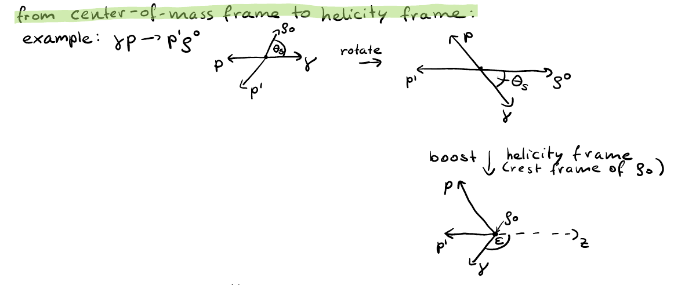
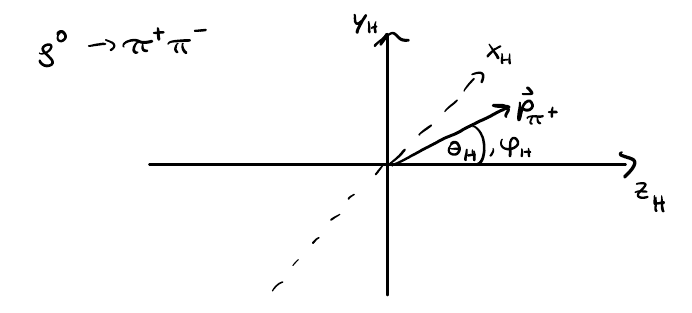
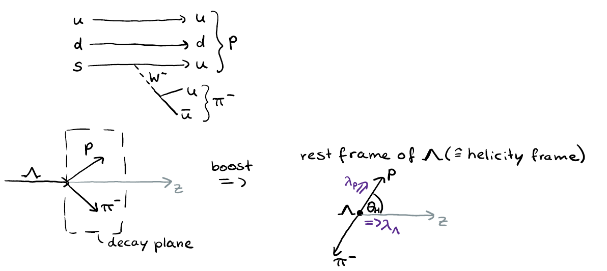
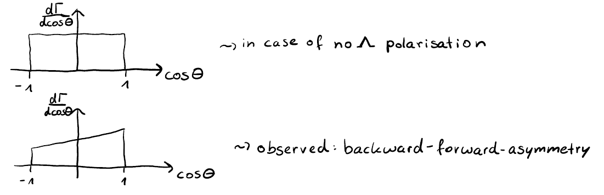
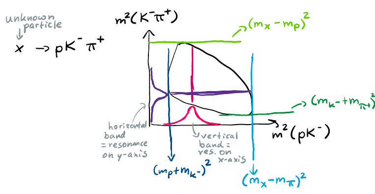
1.1.1 Recap
1.2 Question 1: Flavor and Multiplets of Σₓ
Q: What does flavor mean in the context of the multiplet?
A: “The charge of the strong interaction.” Flavor refers to the quantum number for the multiplet. There are many quantum numbers—here we mean the flavor quantum number. Flavor is not color (like red, green, blue); it corresponds to the quark types: up, down, strange, charm. Do not mix them up.
Q: What is a multiplet?
A: A multiplet is the set of different possible combinations for one quantum number. For example, with one total spin, multiple configurations form a spin multiplet. In the context of flavor multiplets, we talk about different combinations of quark flavors.
Q: What are the flavor multiplets of Σₓ?
A: The Σₓ baryon has a bottom quark and two light quarks. The flavor multiplets include:
- Isospin multiplet (SU(2)): Changing an u quark to a d quark yields a different isospin projection. This gives two particles: Σₓ⁰ (with a d quark, charge 0) and Σₓ⁻ (charge –1). Both contain a bottom quark and belong to the same isospin multiplet.
- SU(3) multiplet: When also changing the strange quark, the multiplet becomes a decuplet. The decomposition for two quarks in SU(3) is 3 ⊗ 3 = 6 ⊕ 3̄.
Note: Replacing only one quark with an antiquark is not allowed because the baryon number must be preserved (three quarks). The antiparticle would involve replacing all three quarks.
1.3 Question 2: Spin of the ππ System in D‑Wave
Q: What is the spin of the ππ system in a D‑wave?
A: The pion has quantum numbers Jᴾ = 0⁻. Two pions have total spin 0 and parity +. Coupling with different orbital angular momenta gives:
| Orbital wave | Resulting Jᴾ |
|---|---|
| S‑wave | 0⁺ |
| P‑wave | 1⁻ |
| D‑wave | 2⁺ |
Thus, the spin of the D‑wave two‑pion system is 2.
1.4 Question 3: Gauge vs. Flavor and Lorentz Symmetry
Q: Is flavor symmetry gauge? Is Lorentz symmetry gauge?
A: Gauge symmetry is a local symmetry—it can be adjusted independently at each spacetime point. Global symmetries are not gauge. Flavor symmetry is global, not gauge. Lorentz symmetry in our consideration is also not gauge; we boost and rotate all of spacetime simultaneously. However, one can consider Lorentz transformations as a local gauge symmetry, which leads to the gravitational field—but that is not done in the standard treatment of strong interactions.
2 Fixed Target Experiments and Target Materials
2.0.1 Lecture 5: Particle Production – Dictionary and Slang (see Figure 2)
Today is 8/6/2006. We start with a follow-up to last time on different production mechanisms. (see Figure 4) (see Figure 5) (see Figure 13)
When discussing production kinematics, it is useful to distinguish several classes of experiments, based on both reaction kinematics and practical considerations. (see Figure 1)
2.1 Production Experiments: Fixed Target vs. Collider
| Feature | Fixed Target | Collider |
|---|---|---|
| Setup | Beam directed at a stationary target | Two beams collide head-on |
| Energy reach | Lower (center-of-mass energy is limited) | Higher (all beam energy is available in the center-of-mass) |
| Boost of decay products | Less boosted | More boosted (forward decay products) |
| Historical ease | Easier – only beam production needed; target is a simple fixed setup | More complex |
| Example | GlueX (photon beam on hydrogen target), COMPASS (pion/proton beam; also kaon/nucleon beam mixture; targets include lead, ammonia, hydrogen) | — |
Choice between the two depends on whether you want higher collision energy or more forward-boosted decay products.
2.2 Target Types for Hadron Spectroscopy
In fixed-target experiments, several target materials are used. The most common for hadron spectroscopy is hydrogen.
| Target | Description | Notes |
|---|---|---|
| Liquid hydrogen | ~1 m long pipe, 30 cm diameter, filled with liquid hydrogen under high pressure | Highly explosive. At CERN, COMPASS took several years to pass security inspections. A major disaster could result if it exploded. |
| Ammonia | Used as a polarized target | — |
| Beryllium | ~3 cm disk, a few cm thick | Cheap and simple. With this thickness it gives a significant production rate. |
| Lead | Similar geometry, higher Z | Cross section scales with Z (number of protons). Used for physics programs requiring high-Z targets. |
The beam interacts with a proton inside the target. By reconstructing final-state particles and tracing them back, you find the interaction vertex. After a few days of data collection, the vertex distribution shows the shape of the target.
One observation: the target was not filled to 100%. In XY-coordinate plots, vertices appear in some regions but not others, showing the transverse cut of the target.
The beam profile is Gaussian. In COMPASS, the beam width is slightly larger than the target, so part of the beam passes outside the target. This wastes beam particles. Ideally, the beam should be focused to match the target size.
2.3 Photon Beam Production
To create a photon beam, electrons are sent through a thin foil (few hundred micrometers). Bremsstrahlung photons are emitted. The now-lower-momentum electrons are bent away by a magnetic field placed after the foil, while the photon beam continues to the main target.
3 Kinematic Frames and Exclusive vs. Inclusive Reactions
In the Center‑of‑Momentum Frame description, after the sentence “In this frame, the beam and target four‑vectors are back‑to‑back: \vec{p}_T^* + \vec{p}_B^* = 0.” insert the explicit statement: (see Figure 4) (see Figure 2) (see Figure 5) (see Figure 6) (see Figure 9)
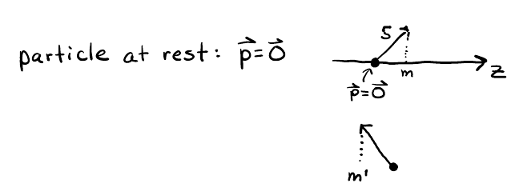
(see Figure 12) (see Figure 13) (see Figure 14) (see Figure 15)
“For the final state, the recoil proton and the ππ system are also back‑to‑back with equal momentum magnitude, forming a reaction plane.”
All other content remains unchanged.
4 Lifetime and Displaced Vertex of Weakly Decaying Heavy-Flavor Particles
4.0.1 Strong and Weak Interactions
Strong interaction gets its name because it produces large cross sections and causes processes to happen very quickly. Weak interaction is called weak because it has a smaller cross section. If a particle does not decay strongly but rather decays weakly, it will have a very small decay width and a very large lifetime.
For heavy-flavor particles, the ground states always decay weakly because the strong interaction cannot change flavor. (see Figure 15) The following particles all decay weakly, since any decay would require changing flavor:
- B mesons
- D mesons
- \Sigma_b baryons
- \Lambda_b baryons
- \Omega_b baryons
- \Omega_c baryons
Once a particle decays weakly, its lifetime is large. That means after production it flies away from the primary vertex before decaying.
Weak decays produce displaced vertices: because the lifetime is large, the particle travels a measurable distance before decaying.
4.0.2 Example of Displaced Vertex (see Figure 7)
Two protons collide. A B^0 meson is produced and decays at a displaced vertex into, say, three pions ( \pi^+\pi^-\pi^- ).
Interestingly, despite the b quark being much heavier than the c quark, the lifetime of b baryons is larger than that of c baryons. In QCD at 7 TeV, the momentum of a B meson is a few hundred GeV, and it flies roughly 20 mm. For charm the distance is smaller, about 5 mm – a factor of about three.
| Particle | Approximate flight distance |
|---|---|
| B meson | 20 mm |
| D meson (charm) | 5 mm |
4.0.3 How Is the Distance Distributed?
Q: How is the distance distributed? Is it always 2 cm, or sometimes smaller and sometimes larger? What does it depend on? A: It depends on the momentum. It’s probably a mean free path.
Q: Right, it’s absolutely correct that depending on the momentum – it’s relativistic physics. The particle in its rest frame lives a certain amount of time. In the lab frame we observe time dilation, so it lives longer. The PDG lists a lifetime of about 10^{-9} s, but because of the high boost – say 500 GeV – the gamma factor is
\gamma = \frac{E}{m}
If the energy is 400 GeV and the mass is 4 GeV, \gamma = 100 . That means the particle lives 100 times longer in the lab frame. So instead of 10^{-9} s we get 10^{-7} s, and multiplying by the speed of light gives about 2 cm.
4.0.4 Exponential Decay Law
But that is not the full story. The 10^{-9} s is the characteristic lifetime in the rest frame, but in an experiment it is not a constant. What 10^{-9} s means is the characteristic of a distribution.
Q: What is that distribution? Think of nuclear physics – it’s exponential. A: Exponential. (see Figure 18)
Q: Exactly. (see Figure 8) (see Figure 10)
It is the same exponential decay law:
\frac{dN}{dt} = e^{-t/\tau} (see Figure 16)
The fact that it comes from a Poisson process – we do not know at which moment a given particle decays. If you collect thousands of B mesons at rest in a box, they do not know about each other, and at every moment the probability of decaying is the same. From that you get an exponential decrease in the number of particles:
N(t) = N_0 \, e^{-t/\tau}
That is the exponential decay law, and the same thing is observed in particle physics for B , D , and any particle. It is just the quantum nature of states.
So when you are told the B meson flies 2 cm from the primary vertex, that is really a convoluted distribution. There is a distribution of production momentum (hence \gamma ), plus each B decides for itself where along the exponential it decays. Together these determine the mean travel distance – the lab-frame distance between primary and secondary vertex.
4.0.5 Experimental Method
In the experiment you do not measure the decaying particle directly. You observe the final-state tracks.
For each track you define the closest distance to the primary vertex – the impact parameter (IP) – and compute an IP chi-squared, which is the distance divided by its uncertainty. This number shows how inconsistent a track is with the primary vertex.
You can select events where tracks have a large IP chi-squared, indicating they come from a displaced vertex. Then you force three such tracks to come from a common secondary vertex and compute their invariant mass:
M = \sqrt{(p_{\pi^-} + p_{\pi^+} + p_{\pi^-})^2}
using the measured four‑vectors of the pions. The resulting spectrum peaks around the B mass.
4.0.6 Three Features of the Mass Spectrum (see Figure 3) (see Figure 11) (see Figure 17)
A peak – The number of counts is small at low mass, then rises, and the distribution has a bell shape with a certain width, with most events gathered around that mass. Why? If the true process is B \to \pi^+\pi^-\pi^- , the mass of the three pions should exactly equal the B mass – theoretically a delta function. Experimentally we do not observe a delta function but a Gaussian curve. The spreading comes from measurement uncertainties (hit positions, tracking with finite precision). For particles that decay weakly, the natural width is negligible (eV scale compared to GeV), so the observed width is entirely from the detector resolution.
Combinatorial background – Random combinations of pions that pass the selection criteria. Because the number of particles per event is large (a few hundred, sometimes up to a thousand), the combinatorics are huge. For example, with 300 \pi^+ and 200 \pi^- , the number of possible three-pion combinations is enormous. Many of those combinations come from primary-vertex tracks that have a large impact parameter only due to resolution. They produce a smooth background under the peak.
Misidentification peaks – Sometimes additional peaks appear due to misidentification of particles (e.g., a kaon labelled as a pion).
5 Mass Identification and Phase Space in Decay Kinematics
5.1 Mass Identification
The last feature to discuss is mass identification. It is important for all experiments. When we track particles, we do not measure their mass directly. The momentum is measured from the curvature of the track in the magnetic field. I know how to solve the differential equations for charged particles in a magnetic field, so I can adjust the momentum to fit the measured points. Thus I know the momentum.
The four-vector has energy and momentum components. I measure the momentum, and I compute the energy under a mass assumption. I must assume that the particle is a pion in order to compute its energy. So all charged particles look similar to me unless I use extra information from the tracking. Without information from particle identification detectors, which I will discuss later, I have to assume a mass. Part of the background comes from this assumption.
Consider an example: an event where a B meson decays to \mathrm{K}^- \pi^+ \pi^- . This has all the characteristics of my event of interest: a secondary decay to \mathrm{K}^- \pi^+ \pi^- . The only difference is the particle type, but the tracks look identical. Without identification, I incorrectly compute the energy of the particle. Momentum is measured correctly, but energy is not. This leads to an incorrect invariant mass. Instead of the B mass, I observe a different value.
Is there an intuition? The reflection of this reaction should be on the left or right. (see Figure 3) This could be a homework problem: take an event, compute the kaon momentum, assume it is a pion, and recompute the invariant mass. You will find a different value, either larger or smaller. I believe the computed mass shifts because the kaon mass is larger; using the smaller pion mass shifts the invariant mass.
Without particle identification, we would have significant backgrounds. We need good particle identification detectors, such as the ring‑imaging Cherenkov detector or time‑of‑flight systems. These are essential to suppress misidentification.
5.2 Phase Space and Simulation (see Figure 7)
In experiments, we simulate to see what we expect. We use the same setup as in the experiment, with computer programs that simulate particle collisions, decays, and interactions in the detector. It is important to know cross sections, but also the available configuration space for different particles, which is determined by phase space.
For N particles, the phase space is given by a differential with 3N-4 integrals. This reflects that N particles have mass constraints and four energy‑momentum conservation constraints. The counting of degrees of freedom after applying all constraints is:
| Case | Number of integrals (differential) | Comments |
|---|---|---|
| N particles | 3N-4 | After all constraints |
| Two‑body decay | 2 | Resolving \delta functions leaves only angular integration |
| Three‑body decay | 4 | Final result expressed in two squared masses |
For two‑body phase space, after resolving the energy‑momentum conservation delta functions, we have eight integrals, minus two mass constraints, minus four conservation constraints, leaving two differentials. This can be arranged so that we integrate only over angles; the only freedom is the orientation, because the two particles go back‑to‑back in the rest frame. The configuration space is 4\pi , and the prefactor gives a relativistic factor: \frac{1}{8\pi} \cdot \frac{2p}{\sqrt{s}} .
For three‑body phase space it is more involved. The Lorentz‑invariant expression for d\Phi_3 is d\Phi_3 = \frac{d^3p_1}{2E_1 (2\pi)^3} \frac{d^3p_2}{2E_2 (2\pi)^3} \frac{d^3p_3}{2E_3 (2\pi)^3} (2\pi)^4 \delta^4(p_0 - p_1 - p_2 - p_3).
We can rewrite this using the two‑body topology. The claim is that d\Phi_3 = d\Phi_2(0 \to (1,2),3) \, d\Phi_2((1,2) \to 1,2) \, \frac{d m_{12}^2}{2\pi}. (see Figure 6) (see Figure 18) (see Figure 12)
This decomposition is intuitive: we split the phase space by introducing the invariant mass m_{12} of the pair (1,2) and integrating over it with a delta function that enforces the mass constraint. (see Figure 9) This trick relates an n -body phase space to an (n-1) -body and a two‑body phase space. (see Figure 14)
After substituting the expressions for the two‑body phase spaces, we obtain d\Phi_3 = \left(\frac{1}{8\pi}\right)^2 \frac{1}{2\pi} \frac{d\Omega_{12,3}}{4\pi} d\varphi_{1,2} \frac{d m_{12}^2}{2\pi} \frac{d m_{23}^2}{s}.
The number of integrals remains the same; we have simply resolved all delta functions. The first factor is expressed in the rest frame of the (1,2) pair, giving the momentum p_{123} of particle 3 in that rest frame. The second factor gives the momentum k of particle 1 or 2 in the (1,2) rest frame. (see Figure 16) The last step is to express the cosine of the scattering angle in terms of m_{23}^2 .
We want to compute m_{23}^2 = (p_2+p_3)^2 . The scattering angle in the (1,2) rest frame determines m_{23}^2 linearly. Thus we can trade the angular integration for an integration over m_{23}^2 . The phase space then becomes flat in the two squared masses: \frac{d\Phi_3}{d m_{12}^2 d m_{23}^2} = \text{constant}.
The differential decay width is d\Gamma = \frac{1}{2\sqrt{s}} |\mathcal{M}|^2 d\Phi_3,
so the only variation in the Dalitz plot comes from the matrix element. (see Figure 10) (see Figure 11) (see Figure 17)
Every configuration of the three momenta can be mapped to a point inside the Dalitz plot, whose boundary is described by the Källén function. The interior satisfies \lambda(\lambda_1, \lambda_2, \lambda_3) < 0 , where \lambda(x,y,z) = x^2 + y^2 + z^2 - 2xy - 2yz - 2zx.
Here \lambda_1 = \lambda(s, m_3^2, m_{12}^2) , \lambda_2 = \lambda(s, m_1^2, m_{23}^2) , etc. The Dalitz plot is a powerful way to visualize how a decay proceeds and to see the effect of the matrix element.
As a fun exercise, given three momenta that sum to zero, one can map the configuration to a point in the Dalitz plot. The coordinates are the squared masses of two pairs. Also, look at an example from the COMPASS measurement. Another problem is to compute the distribution of a variable like the mass.